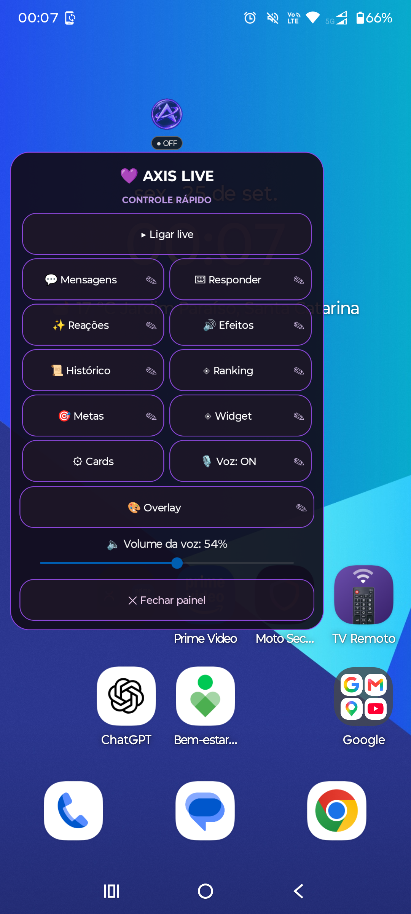
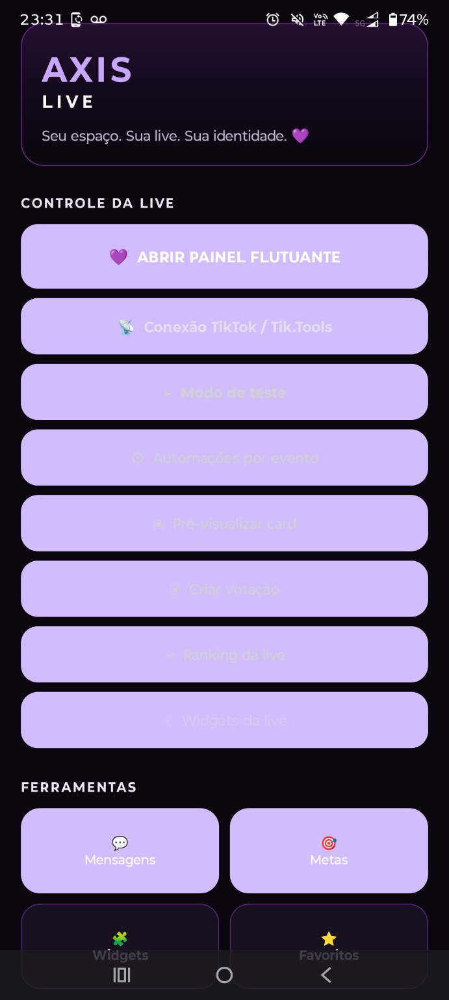
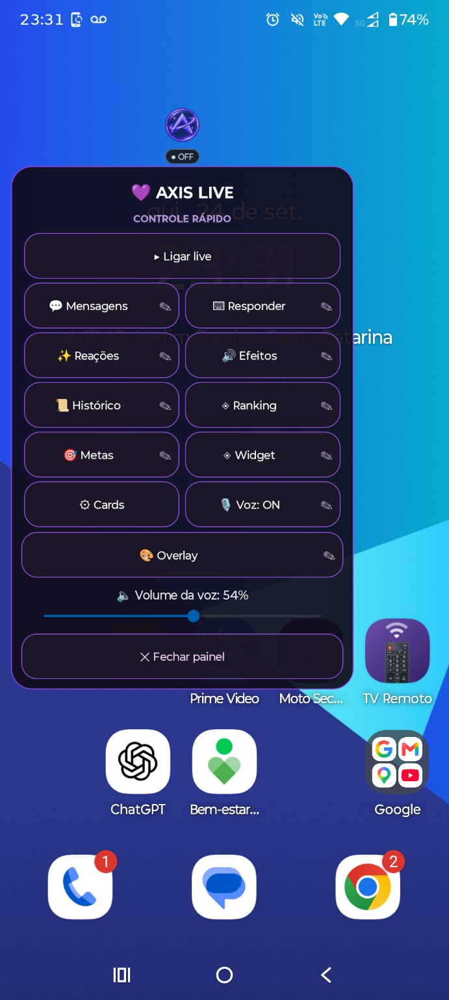
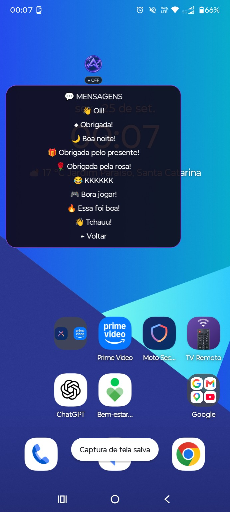
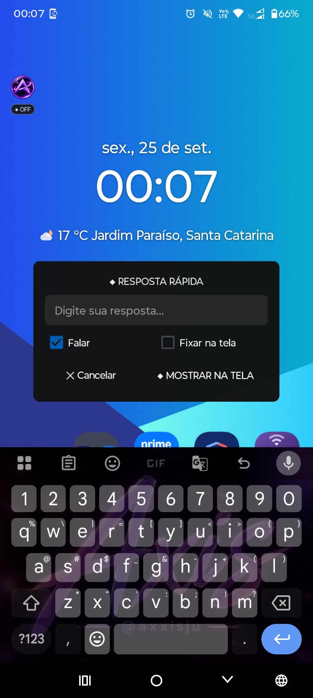
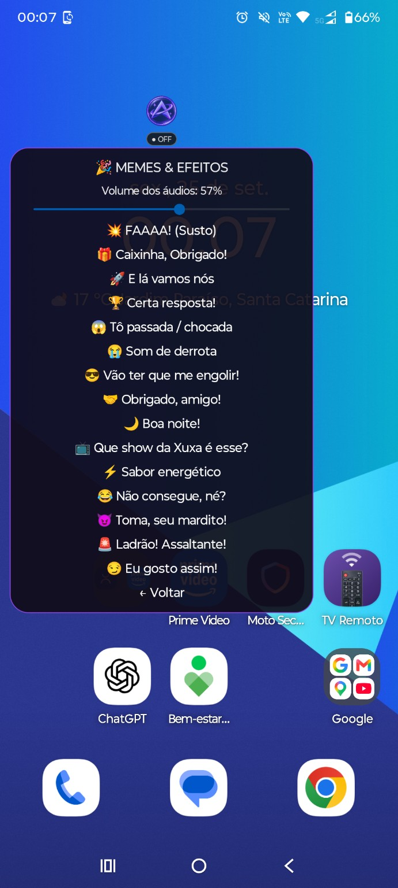
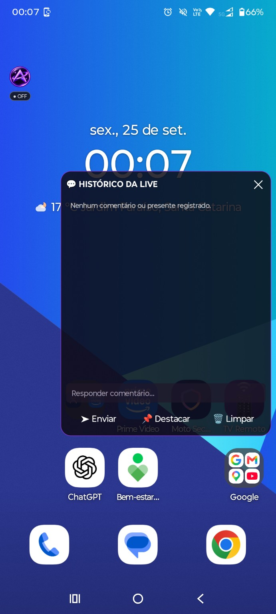
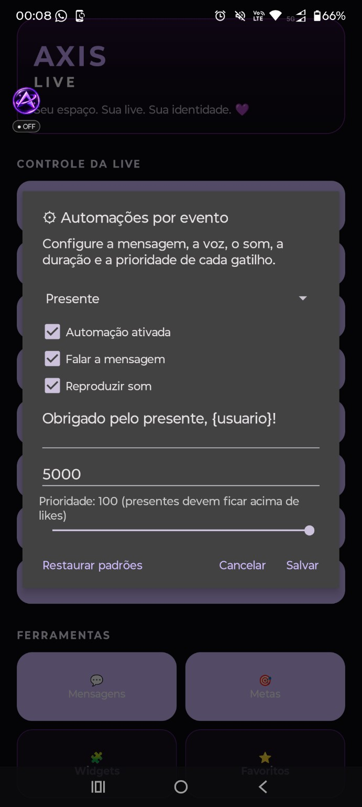

Axis Live
Eu faço lives de jogos pelo celular e queria conseguir interagir com as pessoas sem precisar sair do jogo.
Comecei testando uma bolha flutuante e isso acabou virando um aplicativo Android que hoje já consigo usar e testar em situação real.
Começou com um problema meu
Durante uma partida, sair do jogo para responder ou controlar alguma coisa da live quebra completamente a experiência. Eu queria ter as ferramentas que precisava acessíveis por cima do que já estava fazendo.
A ideia foi crescendo a partir daí: uma bolha pequena que abre um painel flutuante e concentra ações rápidas sem precisar abandonar o jogo.
Não é só um mockup
Esse é o Axis Live rodando no meu próprio celular. O painel fica sobre outros aplicativos e é daí que eu testo os recursos enquanto continuo mexendo no Android ou durante as próprias lives.

O que já fui colocando para funcionar
Bolha e painel flutuante
Acesso às ferramentas do Axis Live por cima do jogo e de outros aplicativos.
Mensagens e respostas
Mensagens rápidas e resposta digitada sem precisar sair da experiência principal.
Reações, efeitos e voz
Recursos para reagir à live, reproduzir efeitos e controlar interações por voz.
Eventos da live
Testes com comentários, presentes, histórico, metas, ranking e automações ligadas aos eventos da transmissão.
Por dentro do Axis Live
Esses são prints reais das telas e ferramentas que fui criando e testando no aplicativo.







Foi mudando porque eu realmente usei
Várias decisões do Axis Live não vieram de imaginar uma interface perfeita. Vieram de abrir o aplicativo, usar durante uma live e perceber que alguma coisa atrapalhava, ocupava espaço demais, falava demais ou simplesmente não funcionava como eu esperava.
Então eu voltava, ajustava e testava de novo. É esse ciclo que transformou a primeira ideia da bolha na versão funcional que tenho hoje.
Onde está agora
O Axis Live já tem uma versão Android funcional. Ele continua recebendo ajustes e experimentos, principalmente porque o uso real sempre acaba mostrando alguma coisa nova para melhorar.
É provavelmente o projeto deste portfólio que mostra melhor como eu gosto de aprender: tenho um problema, tento construir alguma coisa, coloco para funcionar e descubro o próximo problema usando.